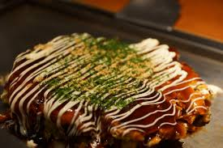

You need for Okonomiyaki
- 1/2 small head cabbage, finely shredded
- 3 scallions, thinly sliced, dark green parts reserved separately
- 2 ounces (50 g) beni-shoga
- 1/2 ounce (15 g) katsuobushi, divided
- 1/4 pound (120 g) yamaimo, peeled and grated
- 2 large eggs
- 1/2 cup (120 ml) cold water or dashi
- 3/4 cup all-purpose flour
- 8 to 10 thin slices uncured pork belly
- 2 tablespoons (30 ml) vegetable oil
- Ao-nori, okonomiyaki sauce, and Kewpie mayonnaise, for serving
Instructions:
- Combine cabbage, scallion whites and half of greens, half of beni-shoga, 3/4 of katsuobushi, yamaimo, eggs, and water (or dashi) in a large bowl. Sprinkle with flour.
- If using pork belly, cover the bottom of a 10-inch nonstick skillet with pork belly and set over medium heat. Add okonomiyaki mixture and spread into an even layer with a fork.
- Cover and cook, shaking pan occasionally, until bottom layer is crisp and well browned, about 10 minutes, lowering heat as necessary if cabbage threatens to burn.
- To flip, drain off any excess fat, then, working over a sink and holding the lid tightly against pan with a pot holder, flip entire pan and lid over so that okonomiyaki transfers to pan lid.
- Return to heat, cover, and continue to cook, shaking gently, until both sides are browned and okonomiyaki is not runny but still custardy and tender in the center, about 8 minutes longer.
- Drizzle with okonomiyaki sauce and mayonnaise, sprinkle with ao-nori, remaining beni-shoga, remaining katsuobushi, and remaining scallion greens.